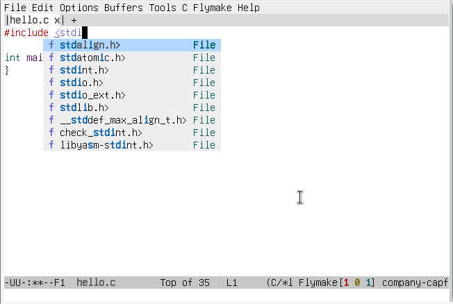

使用GNU EMACS开发Linux用户空间C程序
配置GNU EMACS
package-install RET eglot RETpackage-isntall RET company RET
在GNU EMACS初始化脚本中加入
(add-hook 'c-mode-hook 'eglot-ensure) ;; 在C模式自动开启eglot(add-hook 'c-mode-hook 'company-mode) ;; 在C模式自动开启company
编写Makefile
CROSS_COMPILE ?= arch-vendor-CC = $(CROSS_COMPILE)gccCFLAGS += -Wall -Wextra -O3 -g3CFLAGS += -march=xxx -mabi=xxxall:$(CC) $(CFLAGS) hello.c -o helloclean:rm -fv *.out hello
编写.clangd
由于clangd使用主机的c编译器来处理传入的C源码文件，所以需要clangd忽略机器相关的编译器参数:
CompileFlags:Add: -Wno-unknown-warning-optionRemove: [-m*, -f*]
生成 compile_commands.json
make cleanbear -- make all
编写程序
emacs hello.c
输入代码前面的字符就可以看到补全

上传到板子
scp hello xxx@board:/tmp/hello
调试
使用printf调试
在程序里面打日志作为调试手段
远程调试
远程板子因为资源限制通常不会提供完整的gdb用来调试，通常会安装一个gdbserver充当agent，供别的机器远程上去调试。
因为嵌入式开发的目标板子和运行GNU EMACS的PC机架构不一样，所以在运行GNU EMACS的机器上需要安装一个支持多个架构的gdb-multiarch:
https://aur.archlinux.org/packages/gdb-multiarch
在板子上运行:
gdbserver 0.0.0.0:1234 /tmp/hello
在GNU EMACS中运行:
M-x gud-gdb RET RET进入gdb后输入(ip为板子的ip地址):target remote ip:1234
之后就可以使用gdb进行调试了